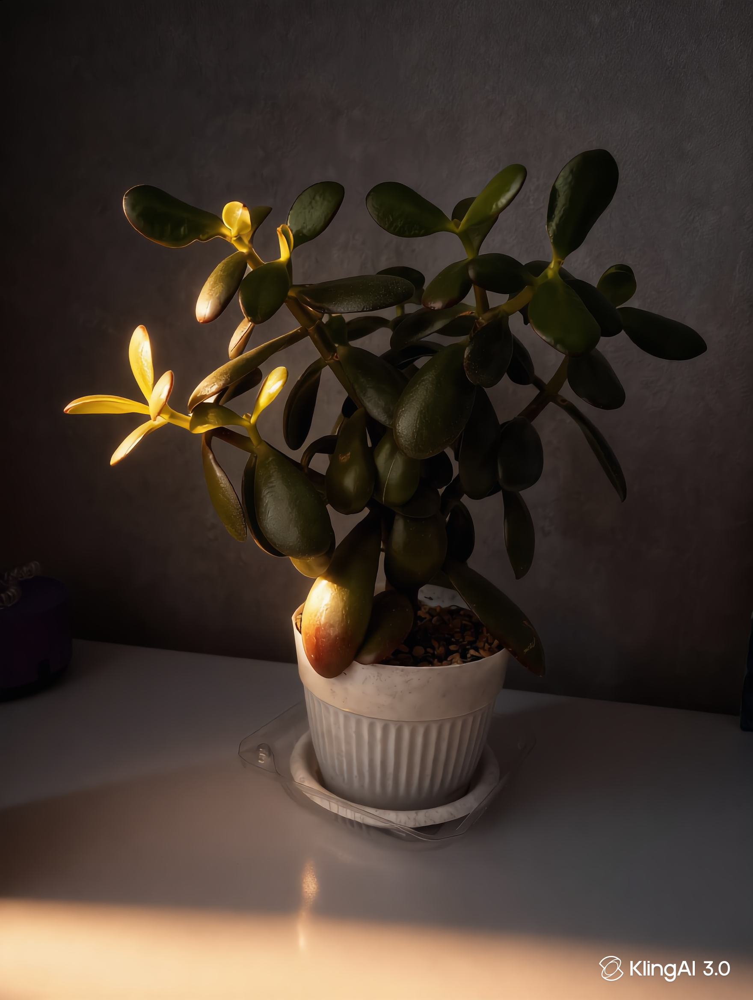

Ministry of Growth
Официальный портал мониторинга ботанических объектов
стратегического значения на территории Российской Федерации
Досье объектов
Следующие записи составляют официальную документацию ботанических активов, находящихся под непрерывным наблюдением Бюро международной ботанической безопасности в рамках Операции GREENWATCH. Доступ к материалам предоставляется гражданским наблюдателям уровня 3 и выше. Несанкционированное распространение нежелательно, но юридически не преследуется в большинстве юрисдикций.

¹ Визуальный анализ от 29.04.2026: коричневые кончики листьев характерны для чувствительности Dracaena marginata к фториду и хлору водопроводной воды, а также к пониженной влажности воздуха (<40%). Немедленной угрозы жизнедеятельности нет. HUMINT-источник: CARDINAL-2.
¹ Визуальный анализ 29.04.2026: тёмный цвет субстрата в прозрачном контейнере — индикатор переувлажнения. Phalaenopsis категорически не переносит застоя воды у корней. Наружные воздушные корни являются нормой, однако их избыток может свидетельствовать о вытеснении из субстрата. Ref: INC-2026-042-WATER.

¹ Визуальный анализ 29.04.2026: стоячая вода в поддоне является основной угрозой для Crassula ovata. Корневая гниль у суккулентов развивается быстро и необратимо. Покраснение нижнего листа — ранний признак стресса. Молодые жёлто-зелёные побеги свидетельствуют о сохраняющейся жизнеспособности. Ref: ALERT-2026-043-WATER.
¹ Визуальный анализ 29.04.2026: объект BINARY демонстрирует образцовое состояние. Декоративный гравий обеспечивает идеальный дренаж. Двойная структура биологически обусловлена — классифицирована как «природная аномалия без оперативного значения». Вмешательств не требуется.
Панель мониторинга в реальном времени
Биометрические и экологические показатели, полученные из непрерывных сенсорных данных и сертифицированных наблюдательных отчётов. Все показатели подлежат министерской интерпретации. Значения носят ориентировочный характер и не должны использоваться без официального заключения Бюро. Данные по объекту 044 предоставляются с особой осторожностью.
Уровень влажности почвы в допустимых пределах. Вмешательство не требуется. Мониторинг продолжается в штатном режиме.
Статистический анализ циклов роста указывает на сниженную вероятность нового листообразования в текущем 7-дневном окне. Применяется сезонная поправка.
Структурная целостность основного ствола подтверждена. Боковой нестабильности не обнаружено. Объект сохраняет вертикальное положение без внешней опоры с 2019 года.
Объект продолжает положительно влиять на пространственное равновесие помещения. Эстетических инцидентов не зафиксировано. Присутствие оценивается как «успокаивающее» (n=4).
Эффективность поглощения света в ожидаемом диапазоне. Сезонное отклонение от базовых показателей учтено. Корректирующие действия не санкционированы.
Аномальных паттернов роста, поведенческих отклонений или постуральных нарушений не выявлено. Все объекты функционируют в пределах зарегистрированных параметров.
Операция GREENWATCH продолжается согласно протоколу MOG-RUS/CONT.
Официальный архив наблюдений
Хронологический реестр всех значимых событий, связанных с объектами наблюдения. Записи вносятся сертифицированными наблюдателями и проверяются Бюро в течение 30 рабочих дней. Все записи являются постоянными и не могут быть удалены. В отдельных случаях — могут быть частично засекречены.
Регистрация гражданского наблюдателя
Зарегистрируйте своё намерение участвовать в национальной программе ботанического мониторинга. Зарегистрированные наблюдатели получают доступ к обновлениям и право подавать официальные наблюдательные отчёты напрямую в архив Бюро.
Все заявки проходят стандартную проверку. Регистрация не создаёт юридических обязательств. Бюро оставляет за собой право отклонить заявку без объяснения причин — данное право, однако, ранее никогда не применялось.
- Способность наблюдать за растением без прямого физического контакта
- Доступ к естественному или искусственному освещению
- Готовность подавать отчёты своевременно (в течение 24 часов)
- Базовое понимание концепции почвы
Центр сообщений об инцидентах
Используйте данный раздел для подачи официальных уведомлений о ботанических событиях, требующих немедленного документирования. Все отчёты принимаются Бюро и оцениваются в стандартные сроки. В случае реальной экстренной ситуации — пожалуйста, также рассмотрите возможность полить растение.
После визуального подтверждения нового листа наблюдатели обязаны подать официальный отчёт в течение 24 часов. Указать приблизительный размер, положение и эмоциональную реакцию (по желанию, но приветствуется).
При превышении допустимого уровня сухости почвы — немедленно подайте отчёт с указанием степени серьёзности и инициируйте протокол бытового увлажнения. Не ждите санкции Бюро.
Любое отделение листа вне утверждённого ухода должно быть задокументировано в течение 6 часов. По возможности — сохраните лист в качестве вещественного доказательства.
Сообщайте о колебаниях температуры, воздействии сквозняка и несанкционированных событиях близости (перестановка мебели) для корректировки экологических базовых показателей.
У вас есть растение,
достойное наблюдения?
Бюро международной ботанической безопасности принимает заявки на включение новых объектов в реестр государственного мониторинга. Ваше растение получит официальный регистрационный номер, оперативный псевдоним, и будет поставлено под непрерывное гражданское наблюдение.
Стоимость регистрации одного объекта: $10. Включает: присвоение номера, создание досье, публикацию в архиве событий. Оплата — при активации системы.
Подать объект на наблюдение →- Официальный регистрационный номер (BOT-ГГГГ-XXX)
- Оперативный псевдоним в стиле ЦРУ
- Визуальный анализ состояния объекта
- Публикация досье на этом портале
- Первичная запись в архив наблюдений
- Статус «Гражданский наблюдатель» с правом подачи рапортов
Растение не станет
наблюдать за собой само
Документирование ботанического развития — не тривиальная задача. Объекты под наблюдением Бюро представляют собой живую летопись устойчивого роста, адаптации и экологического взаимодействия. Их непрерывное наблюдение — одновременно научное обязательство и гражданский долг.
Бюро международной ботанической безопасности приглашает всех правомочных граждан внести вклад в национальный ботанический реестр. Ваши наблюдения — сколь бы рутинными они ни казались — составляют данные. Данные составляют документацию. Документация составляет историю. А история, как твёрдо убеждено Бюро, начинается с того, что кто-то заметил: растение выросло.
Зарегистрируйтесь. Наблюдайте. Докладывайте. Не поливайте сверх нормы.